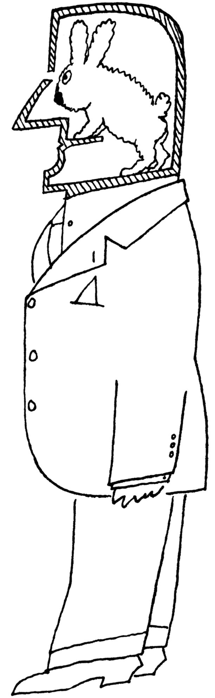

本图来源于《纽约客》1958年11月1日。
Saul Steinberg, Untitled drawing, ink on paper.
Originally published in The New Yorker, November 1,1958.
©The Saul Steinberg Foundation/Artists Rights Society (ARS), New York
据我所知，亚里士多德是第一位将我们这个物种称为“社会性动物”的重要思想家。他当然是对的，但这种说法意味着什么呢？从蚂蚁、蜜蜂到猴子、猿类，许多其他生物也具有“社会性”。作为社会性动物，人类与它们有何不同？研究人类这样一种令人困惑、富有创造性而又容易被激怒物种的社会心理学，又有哪些独特之处？
我的职业生涯，一直是一名社会心理学家。在我进入这个领域之前，甚至在我了解这个领域之前，我就是一名业余社会心理学家了，我渴望搞清楚人类行为的奥秘。20世纪40年代，我在马萨诸塞州里维尔的一个蓝领小镇长大，那时我还是个犹太男孩，我想知道为什么一些信奉天主教的孩子会用反犹太口号嘲弄我，偶尔还会粗暴地对待我。我的儿子乔舒亚，在20世纪60年代经历了艰难的小学生活，他想知道为什么有些孩子在课堂上能够很好成长，而另一些孩子则被竞争压力和教育体制所窒息。这些早期的经历给我们带来了巨大的痛苦，也把我们带到了本书你们将要学习到的令人兴奋的研究领域：这个研究领域提供了对人类社会生活的科学理解，更为重要的是，提供了改进人类社会的方法。
有很多关于社会心理学的定义，但在论及我所心仪的社会心理学定义之前，让我先提供一些人类作为社会性动物行动的具体事例：
一个叫萨姆（Sam）的大学生，正在与四个熟识的同学一起收看一位总统候选人的电视演讲。这位候选人给萨姆留下了很好的印象；他看起来很真诚，所以与他的对手相比，萨姆更喜欢这位候选人。演讲结束后，其中一位同学声称自己讨厌这位候选人，认为他是一个十足的骗子，所以她倾向于另一位候选人。其余几个人都随声附和。萨姆看起来很为难而且有点苦恼。最终，他对他的朋友们低声说道，“我想，他似乎不如我所期望的那样真诚”。
一个10岁的女孩每天早上都要喝下两大碗威提司麦片粥[1]，原因是奥运游泳冠军迈克尔·菲尔普斯（Michael Phelps）印在产品包装盒上。这位冠军暗示，他拥有非凡的运动能力一定程度上是因为食用了这种特殊品牌的麦片。
一位店主在蒙大拿州的一个小镇上生活了一辈子，他从来没有和任何一位穆斯林实际接触过，然而他仍然“知道”穆斯林不是美国人，不忠诚，而且很可能是恐怖分子。
查利（Charlie）是一位高年级的高中生，最近他搬到了一座新城市。以往他人缘很好，而今一切都改变了。尽管新学校的孩子们对他还算客气，但他们并不特别友好。他感到孤独、缺乏安全感、难以引人注意。一天，在午餐的时候，他恰好和同班的两位女生坐同一张餐桌。其中的一位热情、迷人、漂亮、活泼，几周来他一直对这位女生单相思，期盼有机会能和她交谈。而另外一位女生则远谈不上有什么吸引力。查利却对自己心仪的女生不加理睬，而开始与她的那位同伴真诚地交谈起来。
2016年12月4日，来自北卡罗莱纳州的28岁男子埃德加·韦尔奇（Edgar Welch）走进华盛顿特区一家非常有名的披萨店“彗星乒乓”，用步枪开了三枪。没有人受到伤害。韦尔奇告诉警方，他在网上了解到这家餐厅窝藏儿童性奴，他想亲眼看看他们是否在那里。在没有找到证明自己想法的证据后，他投降了。韦尔奇的想法源自总统选举期间疯传的一个假新闻。一个白人至上主义者的推特账户声称，纽约市警方发现了一个与民主党成员有关的恋童癖组织，好像“彗星乒乓”披萨店是他们的大本营。这个故事被虚假新闻网站广为传播。韦尔奇后来说，他对自己的所作所为感到后悔，但他仍然相信那个假新闻。
卡娅（Kaya）二年级时被要求说出她最喜欢的科目。“数学”，她在问卷上写道。一年后，她所在的三年级班级也被安排了类似的调查。这次的问卷问到：“你最不喜欢的科目是什么？”她写道，“数学”。一年之内，卡娅从一个对数学感到兴奋、有信心的学生变成了一个惧怕数学的学生。
1999年4月20日，在科罗拉多州利特尔顿市哥伦拜恩中学的走廊和教室里，回荡着枪击声。两名持有杀伤性武器和爆炸装置的学生，在狂怒中杀死了一位教师和他们的几位同学。接着，他们将枪口对准了自己。硝烟过后，包括枪击者在内的15人当场毙命，另有23人被送往医院，其中多人重伤。在哥伦拜恩中学大屠杀发生后的近二十年里，数百名美国青春期男孩在校园里实施了同样可怕的大规模枪击。曾经不可思议的事情已经司空见惯。
史蒂夫（Steve）是一名大学四年级学生，他开车谨慎、甚至有点保守，独自一人驾车时，他可以成为安全驾驶宣传视频里的演员。然而，每当有两三个朋友和他一起在车上时，史蒂夫的行为就会变得危险起来：当看到半个街区外的灯开始变黄时，他经常会猛踩油门，希望能够在交通灯变红之前冲过十字路口。
1939年，贪婪的德国商人奥斯卡·辛德勒（Oskar Schindler）加入了纳粹党，并开始从野蛮的希特勒第三帝国统治时期犹太人的灾难中获利。在奥斯维辛集中营盘剥了犹太囚犯数年之后，辛德勒改变了主意，开始利用他的工厂来拯救一千多名犹太人。长篇小说和奥斯卡获奖影片《辛德勒的名单》里讲述了这样一个故事：辛德勒冒着生命危险，把所有的财富都用于拯救他人。看完这部影片，我的儿子乔舒亚从电影院走出来，恰好碰到一个乞丐向他讨要零钱。乔舒亚以往不去理会那些寻求救济的人，而且那时他还是一个经济拮据的学生。此时，他却把手伸进口袋，掏出所有的零钱，连数都不数地给了那个乞丐。
道格拉斯·麦凯恩（Douglas McCain）在明尼苏达州长大，高中时打篮球，想成为一名说唱歌手。他的朋友都认为他是个“头脑简单的人”、“善良的小伙子”、“好人”。因此，当听说33岁的麦凯恩加入了激进的恐怖组织ISIS与自己的国家开战并在中东战死时，他的朋友们感到震惊。数以千计的来自西方国家的普通青年男女离开了自己的家园，成为伊斯兰圣战分子，在叙利亚和伊拉克战斗乃至战死。
20世纪40年代，我还在上小学。我有一个很亲密的美国黑人朋友叫乔治·伍兹（George Woods）。当时，乔治把自己称为“有色人种男孩”，并向我吐露，和当时的许多黑人孩子一样，他觉得自己不如白人朋友。1有许多原因导致他持有这种感受，亲身感受到的来自白人主流社会的偏见，直接影响了他。但乔治的自卑感也来自于间接的影响，比如广播和电视中对非洲裔美国成年人的描述——懒惰、无知，甚至残忍——而他们还是天真的孩子，还相当可爱。如果影片中有黑人男性演员，他们只会被描绘成典型的“有色人种”，通常是司机或粗鄙的工人，经常会被人取笑。想象一下乔治和他的白人朋友一起观看这类种族主义影片时的感受吧。然而，他却从没告诉过我他的感受。
而今，一切都已改变。乔治·伍兹的孙儿们成长在21世纪，生活在一个与他不同的世界里。他绝不会想到有这样一天：黑人演员会扮演庄重的角色并赢得奥斯卡奖；种族隔离和歧视成为非法；黑人能够从事所有职业，包括担任美国总统。然而，我们不应陶醉于这样一种信念，即变革是沿着线性的、人道主义的方向前进的。乔治·伍兹的孙儿们可能不会像他们的祖父那样受到同等程度的歧视，但种族偏见仍在继续。大多数非洲裔美国人都知道“黑人购物”经历，这意味着销售人员会对他们的信誉提出质疑，怀疑他们会偷东西，甚至拒绝为他们提供服务。尤其是年轻的黑人男性继续成为“黑人驾车”的受害者，因为微不足道的理由甚至没有任何理由被叫停。还有“黑人独行”，就像16岁的特雷文·马丁（Trayvon Martin）被住在附近的一个叫乔治·齐默尔曼（George Zimmerman）的看守队长跟踪并杀死一样。2齐默尔曼注意到一个穿着连帽衫的高大黑人少年，他以为这可能是一个持有武器的危险罪犯，而事实并非如此：特雷文不过是一个从便利店独行回家的普通高中生，手里拿着一杯冰茶和一袋快餐。
社会心理学的定义
上述事例展示的都是社会心理情境。尽管它们看起来各不相同，但其中都包含着一个共同的因素：社会影响。
萨姆的朋友对那位总统候选人品行的意见影响了萨姆的判断（或者至少他所做出的公开声明考虑到了这种判断）。那位奥运冠军对我们年轻的威提司麦片食用者的影响，则是在有意策划以激发她说服自己的父母去购买威提司麦片。那位蒙大拿州的店主并不是生来就对穆斯林有着根深蒂固的刻板印象，而是有人以某种方式灌输给他的。史蒂夫的冒险驾驶肯定是由于他的朋友在场而受到了影响，但这又是如何做到的呢？卡娅从数学爱好者转变为数学惧怕者并不罕见，特别是在美国，数学在传统上被认为是天赋异禀和“男孩的事情”。查利不理会他的梦中女孩，这与他对自己的感觉以及他对哪位女士不太可能拒绝自己的假定有关。被拒绝是人类最痛苦的经历之一，会导致各种各样的自我挫败和破坏行为，从暴饮暴食到暴力——就像哥伦拜恩校园枪击事件那样。他人在场或榜样的作用，无论是来自现实生活，还是来自类似《辛德勒的名单》的影片，都能激发出积极的情感和慷慨好施的举动，就像它能让我平时一贯节俭的儿子把他所有的现金都给了那个乞丐一样。
社会心理学也可以解决一些最令人不安的问题，这些问题困扰着社会，来自种族主义以及其他形式的偏见导致了像ISIS这样的恐怖组织成功招募到年轻人，而许多年轻人与伊斯兰教没有任何精神上或家庭方面的联系。是什么力量说服他们离开自己的家园和家庭，成为“自杀式炸弹”？答案包括年龄、人格动力、社会认同、说服策略，以及随着本书的展开你将会了解到的其他一些强有力的因素。你将会发现，ISIS利用了许多相同的影响策略，这些策略被那些出色的教练用来组建获胜的运动队，被那些成功的小学校长用来提高学生的成绩。洞察人们的社会动机，可以用来做好事，可以用来做坏事，可以用来赢得电视真人秀比赛，可以用来做任何与社会影响相关的事情——这几乎是所有事情。
因此，我们将社会心理学定义为：他人真实的、想象的或暗示的存在，对我们的思想、情感、信仰和行为的影响，以及我们如何影响他人的科学研究。
我们是如何受到影响的？为什么我们要接受信息，或者换句话说，信息对我们有什么好处？什么样的社会动机使我们容易受到他人的想法、言论和行为的影响？哪些因素会增加或减少社会信息的有效性？哪些因素增加或减少了社会影响力的持久性？适用于人们对某位参议员候选人看法的同样原则，是否同样适用于幼儿更喜欢的某门学习科目？一个人是怎样喜欢上另外一个人的？是否同样的心理过程导致我们选择了普通麦片而不是即食麦片？一个人如何对某个民族、某种宗教或种族群体产生偏见？偏见与喜欢类似？还是恰恰相反，涉及另一种完全不同的心理过程？
许多人会对诸如此类的问题感兴趣。因为我们都花费了大量的时间与其他人交流——受他人的影响；影响他人；高兴、开心、悲伤、厌恶、沮丧，或者被激怒——我们的天性就是对人们为什么做他们所做的事情提出假设。从这个意义上讲，我们每个人都是业余的社会心理学家。尽管大多数业余社会心理学家在与他人互动时会对这些假设进行检验，并达到他们自己满意的结果，但这类偶然的“检验”缺乏细致的科学研究所具有的严谨性和公正性。
可以肯定的是，有时科学研究的结果与大多数人已经了解的事实相吻合。这一点并不令人惊奇，传统智慧通常源自于经受住时间考验的敏锐观察。但有时传统智慧也会将人们引入歧途。事实上，当你读到本书中讨论的一些科学研究结果时，你或许偶尔会想，“这是显而易见的——为什么他们花时间和金钱去‘发现’那样一个结果？我的祖母早已告诉过我”。可能你的祖母曾经告诉过你，但也可能是你的事后聪明偏见。所谓事后聪明偏见指的是，一旦我们知道某一事件的结果，我们往往高估自己的预测能力。这正是为什么我们很容易“周一早上担任枢纽四分卫”、为什么我们会作出“二十比二十”的“事后诸葛亮式”预测的原因。许多研究已经证明了这种偏见，从预测选举结果（我一直知道他会赢，即使民意测验没有这么预测），到预测一个特定的社会心理学实验会出现何种结果。（很明显被试会服从那些残忍的命令）。的确，社会心理学研究发现，与被要求预测将发生什么的大学生相比，那些被告知在研究中发生了什么的大学生会认为所发生的一切更为显而易见。3一旦出现事后聪明偏见，一切都会变得显而易见。
社会心理学家之所以要进行科学研究，是因为我们意识到许多人们认为理所当然的事情，我们研究的结果却证明是错误的，或者与人们最初所认为的有所不同。例如，人们一般会认为：那些做了被禁止的、非法的、弄巧成拙的事情而受到惩罚威胁的人，最终可能会停止他们的行为；而且惩罚越严厉，他们服从的可能性越大。毕竟，他们会将这类行为与恐惧或痛苦联系起来。但付诸研究时，这个假设却被证明是完全错误的。当面对着轻微惩罚的威胁时，人们会讨厌被禁止的行为；而那些受到严重威胁的人，更可能受到被禁止的活动的吸引。同样，从自身的经验出发，我们大多数人会猜测，假如我们无意中（背后）听到某人在讲我们的好话，在其他条件都相同的情况下，我们会喜欢这个人。这一点已经被证明是正确的。但同样正确的是，假如我们无意中听到的不完全是好话，我们会更加喜欢这个人。在后面的章节中我们会对这一现象作进一步探讨。
在理解社会性动物方面，专业社会心理学家比大多数业余社会心理学家具有更多的有利条件。尽管像业余社会心理学家一样，我们也往往是从仔细观察开始的，但我们并不会就此止步。我们不必等待事情发生后去观察人们如何反应；我们可以让事情发生；我们可以进行实验，在实验中让许多人面对特定的事件（例如，严重的威胁或者轻微的威胁；无意中听到好话或者无意中既听到好话又听到令人不愉快的话）。不仅如此，除了所要研究的具体因素，我们可以在特定的情境下使一切保持不变。然后，我们可以比业余社会心理学家获得更为精确而丰富的材料，并在此基础上得出结论。而后者则只能依靠对随机发生事件的观察，并且不能排除许多同时发生的事情。
本书所呈现的所有材料几乎都有其实验依据。由于这个原因，以下两点特别重要：（1）读者需了解一项社会心理学实验的构成要素；（2）读者需了解与这种探索联系在一起的那些有利因素、不利因素、伦理难题、激动人心之处、棘手之处以及为之痛心之处。虽然了解实验方法是重要的，但它决不对理解我在本书中所呈现的大量材料起决定作用。为此，本书最后一章所安排的内容是“作为一门科学的社会心理学”。对读者来讲，可以在阅读其他章节之前先阅读该章（假如你愿意在钻研大量的材料之前先理解技术性问题的话），也可以在阅读本书的过程中，在任何感兴趣的地方随时阅读该章内容。
做出疯狂举动的人未必疯狂
社会心理学家研究影响人们行为的社会情境。有时，这些自然的情境会具有相当大的压力，迫使人们按照一种很容易被归类为变态的方式去行动。这里所讲的人们，指的是为数众多的人。在我看来，将这些人归类为精神病患者并不能增加我们对人类行为的理解。更为有益的做法是尽力去了解特定情境的性质，以及产生特定行为的过程。这就将我们引向了阿伦森第一定律：
做出疯狂举动的人未必疯狂。
让我们来举一个例子，那个手持步枪进入“彗星乒乓”披萨店的人，按他的说法，是打算“自行调查”那里是否有被绑架儿童。难道他疯了吗？如果他真的希望搞清真相，为什么不接受警察部门、联邦调查局以及其他可靠来源所提供的调查结果？这类调查会彻底查清是否存在那些指控。如果他是个疯子，那么其他成千上万的人也是如此，这些人相信这则假新闻，其中许多人对“彗星乒乓”披萨店和其他一些被认为与那个“组织”有关的餐馆进行了恶意威胁，对店主和顾客们进行了骚扰。“彗星乒乓”披萨店的店主告诉《纽约时报》：“正是由于这个疯狂的、凭空捏造的假消息，我们不断受到攻击。那段日子里我几乎什么都做不下去，只是想努力把这件事情处理好，以免我的员工和朋友们受到恐吓。”4是什么导致那些人相信这则“疯狂”的假消息？尽管有确凿的证据表明事实并非如此，为什么他们仍然会坚持这种看法？在本书后面的章节里，我们将考察这类态度如何产生以及为什么无论何种情况下人们都倾向于坚持。我们还会了解到如何来克服这类偏见。
社会心理学的一个重要发现是，人们倾向于通过赋予过错者某种性格特质来解释其令人厌恶的行为，比如“精神病”、“虐待狂”或“邪恶之人”。大多数人，特别是我们这些生活在西方文化背景下的人，会在无意之中自发地这样去做，通过这种方式对各类信息加以组织和分类，从而获得对事件的控制感。这种有关人类行为的人格倾向论基于以下假设：做出疯狂举动的人一定拥有某种疯狂的人格，做出愚蠢事情的人一定是愚蠢的，只有邪恶的人才会做出邪恶的事情，做好事的人一定是善良的，诸如此类。这样的思考方式颇能迎合人们的想法，因为这样可以帮助我们把那些做坏事的坏人和我们这些“好人”区分开来。当我们想到令人厌恶的行为时，这种想法给我们以安慰——因为，作为好人，我们绝不会那样去做。
然而，这种假设过于简单化，往往是错误的。正如您在第2章中将会看到的，我们会为此付出代价。人格倾向论会令我们自以为是，按照这种假设，我们在外部压力下是无懈可击的——而事实上外部压力往往会导致我们做出愚蠢、疯狂或残忍的举动。这种假设使得人们不再关注环境的改善，而是狭隘地去关注人格。例如，经理担心员工是否会偷窃？会让每个员工接受一项人格测验，试着判断将来谁会偷窃，而不去关注员工是否会因为工作强度过大、心生怨恨或者报酬太低而偷窃。有人担心学生是否会变得暴力？那就让每个学生接受一项人格测验，并试着预测哪个不快乐或受到了欺负的孩子可能会在某一天爆发，而不去关注这类孩子每天都在挣扎中度过的那个世界。
当然，我并不是说精神病就不存在。有些人格特质和心理疾病的确会影响人类的行为。我也不是说所有人都是一样的，会对同一种社会压力作出完全相同的反应。我想说的是，有些情景会引发我们这些“正常”成年人中令人惊奇的大部分人以一些意想不到的、让人倒胃口的，有时甚至是变态的方式去行动。至关重要的是要明白这些情景中的什么要素会导致令人不悦的、破坏性的行为。
或许我们可以通过一个案例很好地说明这一点。什么样的人会杀死自己的孩子呢？疯子？绝望之人？邪恶之徒？这类人一定存在心理上的问题。1977年，旧金山人民圣殿教的教主吉姆·琼斯（Jim Jones）牧师，说服他的追随者们搬迁到南美洲的圭亚那，在那里建设了一个人间天堂——一个不同种族背景的人可以和谐生活的乌托邦社区。1978年，当这个组织受到国会调查的威胁时，琼斯决定结束这场危机，要求组织成员采取“革命行动”：杀死自己的孩子，然后自杀。他们准备了几大桶毒药，在零星的抗议和反对声中，母亲和父亲们给这些婴儿和儿童喂服了这种致命的混合物，然后自己喝下去，躺下来等待死亡。
当某个人杀死自己的孩子时，我们有理由质疑他是否患有精神病。而当613对父母在某个地方一起杀死他们的孩子时，我们不能再局限于考察他们的精神状况和个性特征，而要考虑导致他们做出这种举动的情景特征。当然，我们可以说他们疯了，也可以为我们永远不会做出他们那样的举动而沾沾自喜。然而，在这些人搬迁到圭亚那之前，他们的邻居、朋友或者亲戚没有人不会将他们视为普通的、有理智的人，他们属于一个相互支持、紧密团结的教会团体。正如人们已经普遍意识到的，“琼斯城大屠杀”提醒我们，社会影响会决定人们的想法、感受和行为，这种影响往往是巨大而隐秘的。
帮助我们理解这种极为复杂的人类行为的情境性的观点——社会情境影响我们行为的许多方面——是社会心理学的重要贡献，我希望社会心理学的价值会在接下来的章节中显现出来。
[1] 美国通用磨坊公司1926年推出的一种麦片品牌，后来逐渐成为一种全球著名品牌，能够成为威提司麦片的代言人是许多体育明星梦寐以求的目标。——译者注